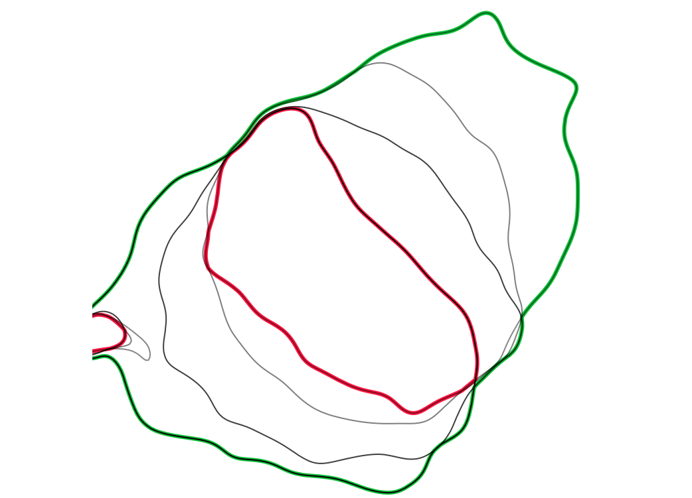
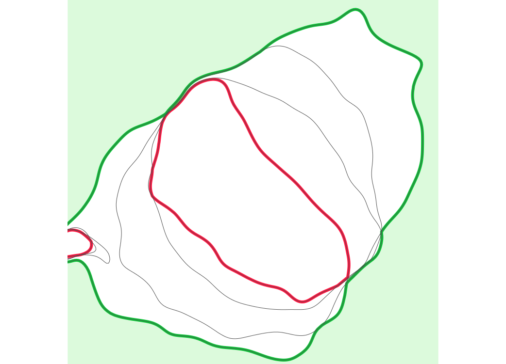
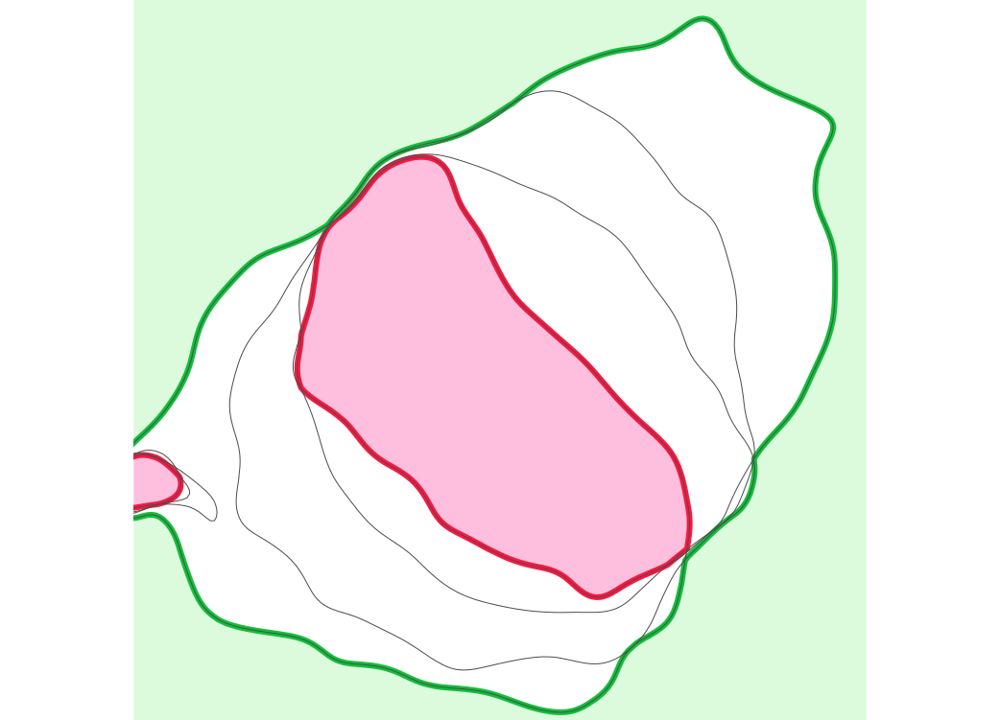
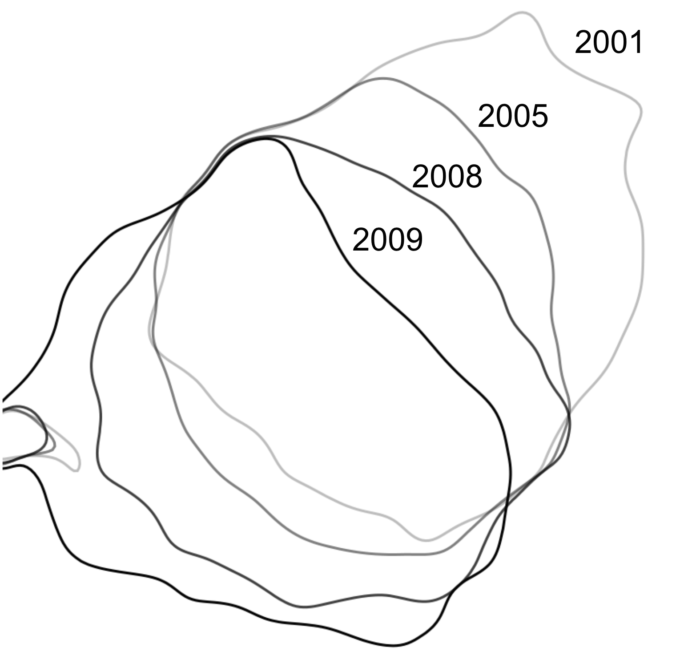
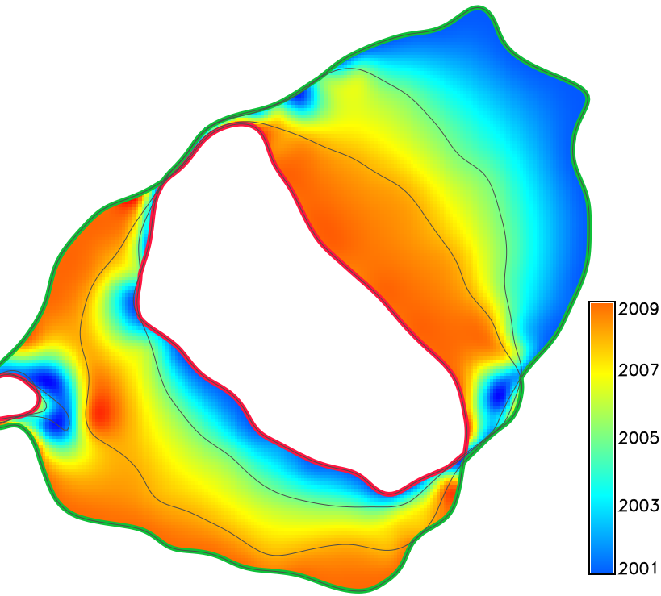
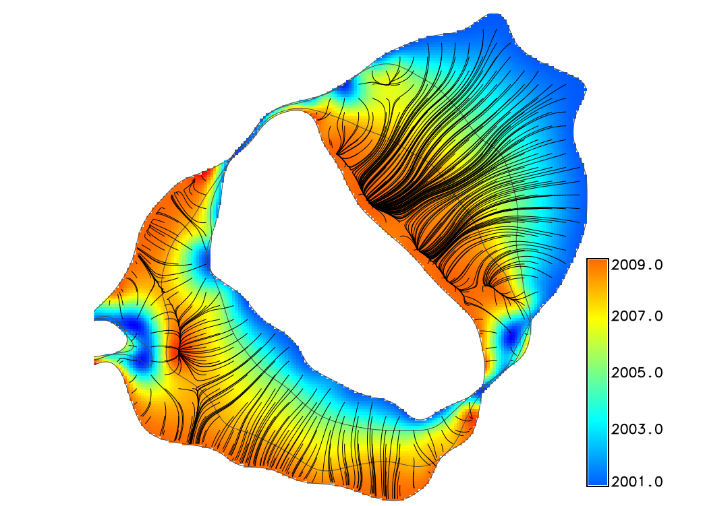
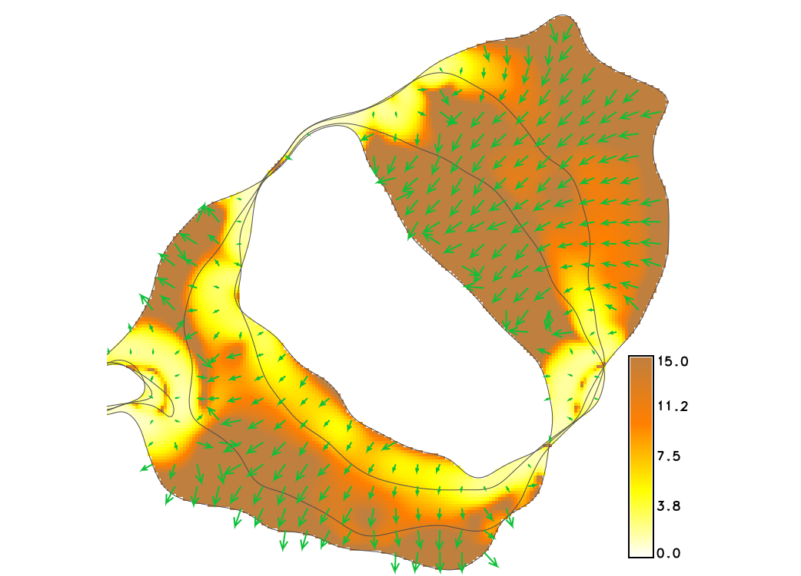
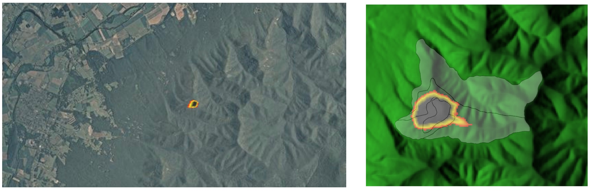
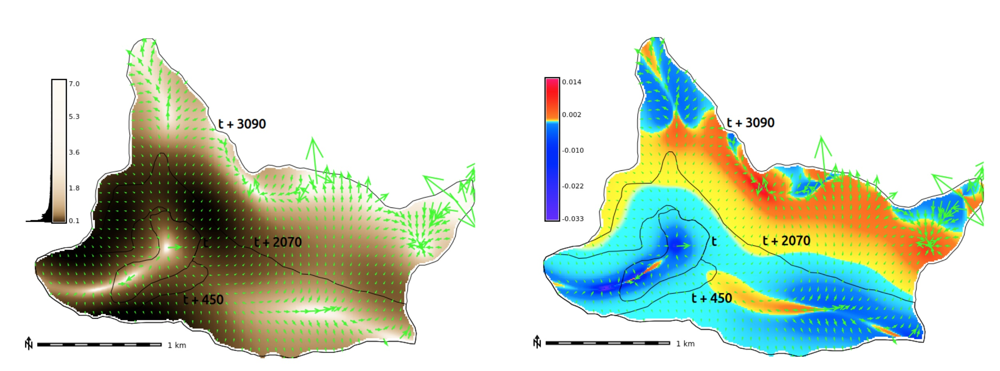

Simple experiment
Series of DEMs for tests created using Tangible Landscape

Set of 110m contours including the ones derived from core and envelope
Envelope: max elevation at each cell (green), Core: min elevation (red)
Mask external areas outside the range of 110m contour migration
Mask internal areas outside the range of 110m contour migration
Each 110m contour is assigned a time [year] attribute
Temporal surface is interpolated from a time series of 110m contours
Derived from spatio-temporal surface using derivatives of spline function
 
gradient lines over time and vectors over migration rates
Shows spatial pattern of mass concentration and dispersal over time
Inspired by Tokyo Wind Speed application by Cameron Beccario.
Derived from air.js source code.
Uses HTML, CSS, JavaScript and D3.js library.
Gradient field of horizontal migration at z=12m for Jockey's Ridge dune for years 1974, 1995, 2001, 2008, 2012, contour segmentation is needed

Migration of windward side of Jockey's Ridge dune at different elevations

Fire isochrones (time series of burned area polygons) and simulation

Fire spread rate and direction and acceleration
(curvature in the direction of gradient)
